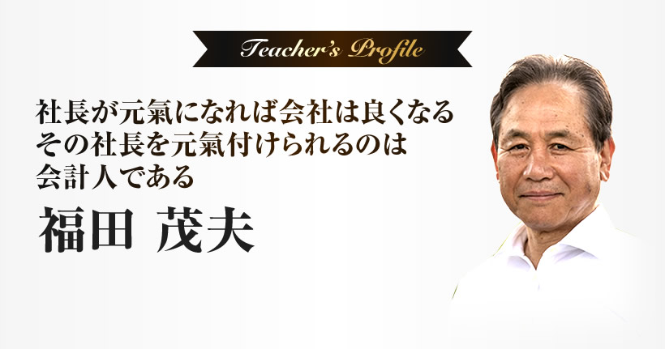

新型コロナウイルスによる緊急事態宣言の影響から、2020年にはじまった新型コロナウイルス感染症特別貸付や民間金融機関による信用保証付き融資。
最長5年の据置期間で、当面元本返済が不要ということで、一息つくことができた中小企業は数多くあります。
しかしコロナ禍が1年超経過した現在、中小企業の業績が回復したのでしょうか？
（引用元: 2021年版中小企業白書・小規模企業白書／中小企業庁）
中小企業庁がまとめた『2021年版中小企業白書・小規模企業白書』によると、71.3%の企業が「影響が継続している」と回答しています。
一方で、同白書には「倒産件数は低水準となっており、金融支援の拡大や持続化給付金など概ね各種支援策が功を奏していると見られるが、感染症の影響に引き続き留意することが必要」とあります。
（引用元: 2021年版中小企業白書・小規模企業白書／中小企業庁）
顧問先の社長に聞いてみても、倒産こそしていないものの、足元の業績は非常に危うい状況です。
なぜなら、コロナ特別融資で借りたお金を、ランニングコストで食いつぶしている…利益を生み出すことが、できていない中小企業がほとんどだからです。
これを聞いて危機感を抱いたのは、私だけではないはず。
2020年を起点にすると、4年後には元金の返済がはじまります。
なかには元金返済の据置期間が5年未満の中小企業もあるでしょうから、残された期間は長くて4年。
今のままだと、4年後にはどうなっているでしょう。
倒産する中小企業が続出し、結果として私たち会計事務所も事業縮小や倒産を避けられません。
だからこそ、私たち会計事務所がやらなければならないことは、顧問先中小企業の業績を回復させることです。
赤字は黒字へと、黒字はより黒字へと、中小企業を導くことができるのは、私たち会計事務所にしかできません。
 かつて会計事務所といえば、いかに税金を安く抑えることができるか、がウリでした。
かつて会計事務所といえば、いかに税金を安く抑えることができるか、がウリでした。
しかし今は異なります。いかに多くの税金を払えるようにできるか、がウリになります。
なぜなら、税金を払えるということは、利益が出ているということだからです。利益が出ているということは、内部留保を増やすことができる、ということです。
すると、財務体質が強固な中小企業へとなることができます。それができるのは、実は私たち会計事務所しかいないのです。
では、どうすれば税金をより多く払える企業へと顧問先を導けるのか？
そのために必要な、会計事務所ならではのスキルは3つしかありません。
1つ目は、会計や税務、財務的な視点からの冷静な判断能力。
2つ目は、勘定科目の改善による経営改善こそ、会計人による財務コンサルの真骨頂。すなわち、月次決算書から赤字は黒字、黒字はより黒字へと社長を導く説明能力、これが2つ目。
最後3つ目は、判断能力と説明能力を駆使した経営計画書の策定指導。
この3つしかないのです。
1つ目の会計や税務、財務に関する専門知識はともかく、2つ目の月次計算書に関しては、「中小企業の社長なら不要なのでは？」と感じたかもしれません。
しかし、私は過去10年間で200名の社長や経営幹部を含む方々に対し、こんな質問をしたことがあります。
「6つの質問をします。お手元にある貴社貸借対照表の、該当する箇所に印をつけてください」
| 1つ目の質問: | 今月の利益はどこに書かれていますか？ |
|---|---|
| 2つ目の質問: | 今月の回収金額はどこに書かれていますか？ |
| 3つ目の質問: | 今月の支払金額はどこに書かれていますか？ |
| 4つ目の質問: | 今月の借入金返済額はどこに書かれていますか？ |
| 5つ目の質問: | 今月の粗利益額はどこに書かれていますか？また粗利率を計算してください |
| 6つ目の質問: | 仕入れが1万円として粗利を3割残したい。この場合、売値はいくらですか？ |
おそらく、会計人のあなたであれば、簡単かもしれません。
しかし、実はこの質問、6つすべて答えられた経営幹部は200名中2名だけ。
しかもこの2名は、経理担当なのです。
「月次決算書をつくって貸借対照表の説明なんて…自身の会社のことだし社長なのだから、わかるに決まっている…」
これまでお会いしてきた担当者に聞いてみると、こう答える方がとても多いことに驚きます。しかし、現実は200名中2名の経営幹部しか、貸借対照表の数字を読み取ることはできないのです。
もちろん、損益計算書ならば大体の社長であればわかります。しかし貸借対照表は違う、わからない。
そして貸借対照表を社長が読めないということは、大きな問題があります。
それは貸借対照表にこそ、中小企業の業績を回復し、赤字は黒字に、黒字はより黒字にできる数字のヒントが眠っているからです。
1つ目は、
「利益の正体がわかる」。
2つ目は、
「お金の集め方と使いみちがわかる」。
3つ目は、
「創業から現在までの社長の意思決定が全部わかる」。
4つ目は、
「資金繰り改善の手の打ちどころがわかる」。
これらを読みとり、社長に説明することで、「なるほど。貸借対照表とはこんな重要な内容が書かれているのか」という納得感を引き出すことができます。
そして、社長に気づきを与えることで、社長から経営の打開策を引き出すことも。
ですから会計人には、これら4つの秘密を使いこなせるようになってもらいたいのです。
これら貸借対照表に隠された4つの秘密を使いこなしてもらうために、開催しているのが元氣玉セミナーです。
しかし元氣玉セミナーはしばらく先まで満員。開催回数を増やそうにも、今はコロナ禍で遠距離の移動に注意している方もいらっしゃるでしょう。
コロナ禍で苦境に陥る中小企業がまだ回復できるうちに、社長を元氣づける会計人が増えてほしい。
具体的に貸借対照表をどう読み取り、どう社長に説明するのか。この技術だけでも伝え、役立ててほしい。
そこで、元氣玉セミナーから「お金の集め方と使いみち」に焦点を当てた動画講座をつくりました。詳しい内容を記しますので、よろしければこのままご覧ください。
- 試算表のなかでもまず社長と話すべきは貸借対照表の部分。この勘定科目から読み取れるのは、単なる資産と負債ではありません。社長でも気づかない、会社の歴史まで紐解いてしまう数字の読み方を公開
- なぜ、試算表は毎月作成しなければ意味がないのか？（どんな社長であれ、会社の数字に興味がないということはありません。いち早くピンチもチャンスも発見し、社長にとって欠かせない人材となる秘訣）
- 凡事実践ができる会計人ほど重宝されて顧問先を増えていくのはなぜか？（新規開拓に最も有効な手段は紹介。では、社長が紹介したくなる会計人とはどんな人？）
- 利益の正体、赤字の正体を社長は気づいていますか？なぜ、会計人はその正体に気づいてもらわなければ存在意義がないのか？会社の運営に隠されたチャンスもピンチもあぶり出す貸借対照表の読み方とは？
- 毎月試算表を携えて社長を訪問するとき、胸に秘めるべき思いとは何か？（ヒント: 社長というストライカーにシュートを決めてもらうためのお膳立て）
- 試算表の説明相手を間違えていませんか？なぜ、説明相手は社長以外ありえないのか？（社長がいるなら、他の誰かが同席しても構いません）
- 貸借対照表で絶対にやってはいけない説明順番。この順番を間違えると、とたんにわかりづらくなり、社長が離れます（ヒント: 木を見て森を見ない）
- 損益計算書が示すのは会社の何か？（貸借対照表は過去から連なる現在、そして未来）
- 事務屋から財務参謀へと脱皮する「問い」（3ヶ月先までの受注予定や設備投資計画の有無、人員の増減の有無、借入の予定の有無などを聴くことで、社長から信頼されるようになります）
などなど、どのように貸借対照表から「お金の集め方と使いみち」を読みとり、社長にどう説明して経営改善への気づきを与えるかを学べる、実際の貸借対照表を使った動画講座です。

独立して株式会社ヒューマンネットワークを創業する以前、会計事務所に約14年勤務し、巡回監査やシステム開発に携わる。また、経営計画プランナーとして中小企業経営者へのインタビューを多数実施する機会に恵まれ、会計人として必要なスキルのひとつは社長の頭の中にある想いを引き出すインタビュースキル、質問力であると確信。
社長を元氣にできるのは会計人しかいない。その自身の経験を会計人に還元するため、全国の税理士・会計士・会計事務所職員のための「元氣玉セミナーシリーズ」と称する我が国唯一の合宿研修会を、1992年以来684回開催。
これまでに3,500名を超える受講者に、元氣になるための研修と顧問先会社を赤字は黒字、黒字はより黒字に導くための財務コンサルティングの考え方と実践方法を、実習を通して具体的に施している。
1990年から「異業種交流百人勉強会」を現在まで38回開催。
1999年より超一流の元氣会計事務所を目指す会「六氣会」を発足。
2012年より超一流の元氣会計人を目指す「実践の会」を発足。
著書
『元氣会社事務所になるための提言』
『社長が元氣になれば会社は良くなる』
『こころを元氣にするその一言』
『経営の改善は勘定科目の改善なり』
『中小企業の黒字はニッポン元氣の特効薬』
（各株式会社ヒューマンネットワーク刊）
株式会社ヒューマンネットワーク代表取締役
1951年栃木県足利市生まれ
 動画講座に参加する方法は簡単です。
動画講座に参加する方法は簡単です。
申込みフォームから必要事項を入力し、講座費をお支払いくだされば、すぐにメールにて動画講座をお送りします。
動画講座ですので、パソコンやスマートフォンから学ぶことができます。
この動画講座は、私が1992年から684回に渡り開催している「元氣玉セミナーシリーズ」から、貸借対照表に隠された4つの秘密のなかでも特に重要な「お金の集め方と使いみちがわかる」に絞り、動画で学んでいただける内容です。
元氣玉セミナーシリーズは1泊2日で71,500円の参加費、各回6名までの定員ですが、満席が続いています。
しかし私は会計人としてのやりがいや使命を感じてもらい、社長を元氣付けられる会計人を増やしたい、増やさなければならない、と思っています。
だからこそ、この動画講座をつくり、一人でも多くの会計人に学んでほしいと考えました。
そこでこの動画講座の参加費は、元氣玉セミナーと同じ71,500円ではなく、3,300円（税込）、拙書とほぼ同じ価格にしました。
動画講座への参加は次のボタンをクリックし、必要事項を記入してお申込みください。
決済方法の問い合わせ先:
株式会社ヒューマンネットワーク動画講座担当宛
human@genkidama.jp
私が、福田茂夫先生にお会いしたのは、資産税特化の事務所から、中小同族会社特化への「転向」を悩んでいた頃だ。高額単価だが資産税特化は職人芸的であり、個人の資質に関係し過ぎて、事務所の拡大には適さない。仕事とは、誰もが楽しみ、誰でも出来なければならない。中小同族会社専門化するのであれば、経営者が納得する財務に特化すべきである、そう考えていた。
決算書作成、1年間の営業成績及び財政状態の報告書、明らかに税務署・金融機関向けに作成する、経営には向いていない。目的は税務調査に来ないこと、来ても追徴税金が取られないこと、である。経営に役立たせるには古すぎるし、経営者が知りたい情報が見えない、それは「月次試算表」に満載である。この説明能力こそ、会計事務所の商品でなければならない。それは、法人向け生保販売にとっても、必要保障金額計算にとっても、「節税保険」にとっても、重要である。決算書から保険は売れない。
当事務所では、入社1年すると、「足利参り」がある。福田先生の元、月次試算表の説明能力（読解・分析・説明）を鍛える。経営コンサルティングは、「現状把握」から始める。その「現状」とは、古新聞「決算書」ではない、「月次試算表」である。コロナ禍、経営改善、再構築を考える際には、決算書ではない、先月末試算表だ。
そして、「経営とは？」、この答えはズバリ「月次試算表を理解する」ことです。
フォルテッツァグループ創業者
税理士 井上得四郎
2017年5月。
サラリーマンを辞め保険代理店を立ち上げたばかりの時に元氣玉セミナーを受講しました。
そんな私ですが、2020年に保険代理店を辞め、現在は中小企業に特化したコンサルティング会社を経営しています。
お陰様で財務コンサルタントとして、全国の中小企業や医療法人50社以上からお仕事を依頼される状況となりました。
決算書すら読めない。財務なんて何も知らなかった私がなぜ財務コンサルができているのか？
それは元氣玉セミナーを受講し、経営に役立つ財務を理解したからです！元氣玉セミナーがなければ今の自分はなかったと断言できます。
会計事務所の皆様、コロナによって大きなダメージを受けて中小企業経営者が、本当に必要としているものはなんなのか？をもう一度見つめ直す良い機会ではないでしょうか。
元氣玉セミナーにはその答えがあります。
株式会社シルエフ 代表取締役 宮島大輔
事務所の特徴をどう出していけばいいのか悩んでいたが、セミナー受講後は「これだ！」という確信を持つことができました。新たなる師との出逢いであり、会計人としての本当の始まりでもありました。以来私の事務所では職員にとって必須のセミナーとして位置づけ全員がお世話になっております。「何か」を追い求めるのではなくて、原点に返ってみることで、目指すべきところが見えてくることもあるかと思います。この元氣玉セミナーは会計人の未来を変えてくれます。
神奈川・税理士事務所所長
福田先生の説明を聴いて、月次試算表の数字がこれほどまでに、まるで生きているようにその会社と社長の姿、心を映し出して浮き上がって見えてきたことには驚きました。
山形県・会計事務所職員
「社長が元氣になれば会社はよくなる、その社長を元氣付けられるのは会計人である」の旗印のもと、自分の仕事の一つ一つの意味をより深く感じ、今までの認識とのギャップを考えさせられました。元氣玉セミナーで実務上のスキルを磨けたのはもちろん、それよりも、「心」が磨かれたように思います。
東京都・会計事務所職員
技術より氣持ち、氣持ちがあれば技術は付いてくる。そう感じた２日間でした。数字を相手にする会計人なのか、お客様という人間を相手にする会計人なのか、どちらが今の日本の会計事務所、日本に大切なのか学べました。
岡山県・会計事務所職員
元氣玉セミナーに参加して、
会計人としての在り方、人生を豊かにするための考え方など多くを学ぶことができました。また色んな事務所からの参加者がおられ、自分に足りなかった協調性を養うことができました。
試算表の実習では、人前で伝える力、質問する力、答える力、を学びました。B/Sから説明し、社長の興味のある数字だけを伝えるというやり方は、翌日から実践しています。今後は試算表をじっくり眺め、自信を持って月次訪問ができると思います。
先ず、社長を元氣にするために自分が元氣になる習慣を作っていきます。小さな心配り、始業前の仕事の優先順位など、自分が出来ることから始めようと思っています。小さな積み重ねが、倍ではなく、何乗にもなるきっかけにしたいと思います。
大阪府・会計事務所職員
元氣玉セミナー１に参加して
セミナーを通じて一番感じたことは「視点の違い」でした。
普段どっぷりと浸かっている会計業界の常識からくる思い込みの思考が全てではなく、時には正反対な切り口で物事を視たり、観ることを氣付かされた。
●社長にヒントを与えることのできる職業。こんな恵まれた立場はない。
「また…again」と言われる会計人となりたい。
滋賀県・会計事務所職員
元氣玉セミナー１に参加して
会計人としての役割を再認識でき大変有意義なセミナーでした。
現在会計人として最低限やらなくてはならない事や、今後やらなくてはならない事を確認するこことができた。もっと早くこのセミナーに出会えていれば今の自分よりももっと良い元氣会計人になっていたのではないかと感じました。
新潟県・会計事務所職員
月次決算書の読み方、説明の仕方といった実務面と、仕事と人生に対する心構えの両方を学べた素晴らしい２日間でした。
月次決算書に並んだ数字から『儲かっているのか』だけではなく、『資金繰りの良し悪し』『会社が抱えている課題』そして『社長さんの人柄』までも読み取ることが出来るというのは驚きでしたし、興奮しました。
又、資金繰りを改善しさらに発展していただくために、社長さんと何をどのような順番で語れば良いのかがしっかりと理解できました。
長野県から参加
月次決算書がいかに重要であるか、経営者に氣づきを与え元氣を与える為の根本であるかを知り、財務を通じて社会貢献ができると確信を得ました。
東京都から参加
※参加された方々の感想であり、同じ成果を約束するものではありません。
最後に、わかれ道の話をしたいと思います。
最後まで読まれたあなたの前には2つの道があります。
1つは、ここまでの内容を参考にして、自分自身実践していく道。
これも一つの方法です。失敗することもあると思いますが、それも人間力を身につけるには大切なことですから。
もう1つは、動画講座に参加して貸借対照表からお金の集め方と使い道の読み取り方を学び、手に入れることです。
私は東日本大震災後に瓦礫除去のために現地入りし、この惨状を回復させるには国家財政からの支出を増やさなければならない、と思いました。
では支出を増やすにはどうすればいいか？税金を支払える会社を増やすことです。
そして社長が元氣であれば、会社は良くなります。
では社長を元氣付けられるのは誰か？
試算表から社長と対話し、社長の苦労も喜びも分かち合える、そんなポジションにいることができる、会計人以外にありえません。
ここまで読んでくださっているということは、あなたも私の考えに、何かしら共感するところがあるのでは、と考えています。
であるならば、取るべき道を、もう決めているかもしれない。そう思っています。
会計人として、実務スキルと志とが相まってこそ、暗夜の一燈になります。
会計事務所の所長と会計人が、日本を元氣にする役割を担っています。
この案内が、そして動画講座が会計事務所として、会計人として大成される道しるべの一助になれましたら、望外の喜びです。
続きは、動画講座で。
最後までご覧くださいまして、ありがとうございました。
この動画講座はテスト案内です。
あまりにも広告費ばかりがかさむようでしたら、動画講座自体をやめることも考えています。
ですから、受付している今のうちに、決断することをお勧めします。